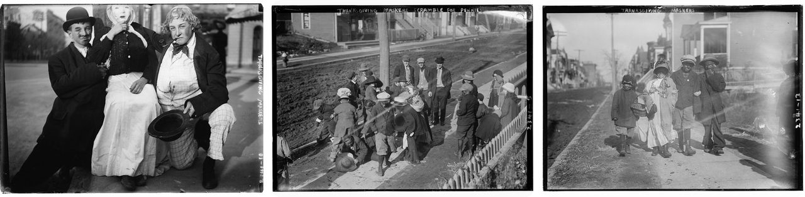
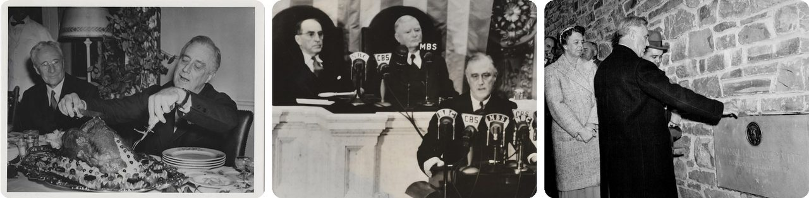
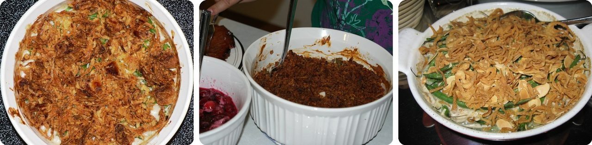

🌍 十大 感恩节与节日购物的冷门历史
2026年11月23日
1. 🎭 感恩节以前才是“不给糖就捣蛋”的日子

大约从 1870 年到 20 世纪 30 年代，纽约的小孩在感恩节有个习俗，叫“小叫花子日”（Ragamuffin Day）。他们穿上破破烂烂的衣服，扮成小乞丐，到处找大人要零食和硬币。后来打扮越来越花哨，孩子们开始穿各种各样的戏服，不只是破衣服了。老式玻璃底片拍下的“感恩节化装者”照片里，能看到戴面具、戴大帽子的小孩在街上抢别人扔下来的硬币。
可大人们渐渐烦了这种讨要。到了 20 世纪 30 年代，讨东西这部分被取消了；到 50 年代，整个习俗都没了。穿着戏服跟陌生人要糖，最后跑到了万圣节。
所以说，这个穿戏服要糖的节日，以前是配着火鸡肉汁一起过的。
2. 📅 1939 年，得克萨斯州过了两个感恩节

1939 年的 11 月有五个星期四，所以按老规矩“最后一个星期四”过的感恩节，落在了 11 月 30 日。商店老板们急了：这样离圣诞节只剩 24 个购物日。一家大百货公司的老板请罗斯福总统把节日提前一周。罗斯福真的改了，改到 11 月 23 日（正好是 87 年前的今天）。可每个州自己决定放什么假，于是全国分成了几派：23 个州用新日期，22 个州坚持老日期，科罗拉多、密西西比和得克萨斯干脆两天都放假。大西洋城市长笑它是“富兰克林感恩节”（Franksgiving），62% 的美国人不喜欢这个改动。
更妙的是：1941 年政府调查发现，多出来的这一周并没有真正让销量变多。同一年，国会把感恩节定在 11 月第四个星期四，一直到今天。
说白了，总统为了购物的人挪了节日，结果购物的人没买账。
3. 🚓 “黑色星期五”最早是费城警察的抱怨
 已知最早把感恩节第二天叫“黑色星期五”的，是 1951 年的一本工厂杂志。它说的是工人在那天打电话“请病假”，好凑出四天连休。
已知最早把感恩节第二天叫“黑色星期五”的，是 1951 年的一本工厂杂志。它说的是工人在那天打电话“请病假”，好凑出四天连休。
差不多同一时间，费城警察也开始叫它“黑色星期五”，因为那天市中心交通堵得可怕，购物的人挤成一片。1961 年，费城想换个好听点的名字，叫“大星期五”（Big Friday），可根本没人用。直到 1985 年，辛辛那提和洛杉矶的商店都还没听说过这个说法。
你常听到的那个开心版本，说这天商店终于从“赤字”（亏钱）变成“黑字”（赚钱），是后来才有的。它第一次出现在报纸上是 1981 年，那时商店想给这个阴沉的名字找个好听的理由。
换句话说，名字来自一肚子火的警察，开心的解释是后来补上的。
4. 🎈 梅西百货曾经把游行气球放飞，还发赏金
 1928 年，梅西百货开始用氦气代替普通空气给游行气球充气，气球就能飘起来了。游行结束后，气球设计师干脆把五个气球放上了天。它们被设计成慢慢漏气，大约一周后落下来，谁捡到一个就能拿 100 美元，差不多等于今天的 1,880 美元。
1928 年，梅西百货开始用氦气代替普通空气给游行气球充气，气球就能飘起来了。游行结束后，气球设计师干脆把五个气球放上了天。它们被设计成慢慢漏气，大约一周后落下来，谁捡到一个就能拿 100 美元，差不多等于今天的 1,880 美元。
这一下变成了天上的寻宝游戏。1931 年，有名的飞行员克拉伦斯·钱伯林在半空中发现了一只龙气球，用飞机的翼尖把龙头削掉，把碎片带回地面，领了 25 美元奖金。还有一只蓝色河马气球飘过帝国大厦，从此再也没找到。
1932 年，一位新手女飞行员想学这一招，差点把飞机摔了，梅西百货从此不再放气球。
你可以把它想成漂流瓶，只不过有一栋房子那么大。
5. 🚒 美国最老的感恩节游行，不是梅西百货的
 美国最老的感恩节游行在费城。它从 1920 年开始，比梅西百货早四年，是金贝尔（Gimbels）百货办的。这家大百货公司想让每个过节购物的人都奔向它的玩具楼层。
美国最老的感恩节游行在费城。它从 1920 年开始，比梅西百货早四年，是金贝尔（Gimbels）百货办的。这家大百货公司想让每个过节购物的人都奔向它的玩具楼层。
五十多名店员穿着戏服走过市场街。最后，圣诞老人来到商店，爬上消防队的云梯车，一路爬到八楼的玩具部。
金贝尔百货一直办这个游行，直到 1986 年关门。没有它，游行照样继续，现在每年感恩节还在办。
所以，第一场大型感恩节游行，其实是“快来我们玩具楼买东西”的一种花哨说法。
6. 🏃 有一场感恩节“火鸡跑”比波士顿马拉松还老
 纽约州的布法罗从 1896 年起，每年感恩节都举行一场叫“火鸡跑”（Turkey Trot）的比赛。这让它比波士顿马拉松大约早了五个月。赛道沿着特拉华大道，大约 5 英里（8 公里）。
纽约州的布法罗从 1896 年起，每年感恩节都举行一场叫“火鸡跑”（Turkey Trot）的比赛。这让它比波士顿马拉松大约早了五个月。赛道沿着特拉华大道，大约 5 英里（8 公里）。
第一届只有六个人跑，还是在土路上，最后只有四个人跑完。1899 年还闹出作弊丑闻：布法罗队的一名选手有一段路是坐马车过去的，结果他的队输给了罗切斯特队。
它从来没有因为天气取消过，就算布法罗下超大暴雪也一样。2000 年，市政府先把比赛路线上的雪清干净，好让比赛照常进行。到 2011 年，它已经能容纳 13,200 名选手。
说白了，这是一场连续跑了 130 年的节日慢跑。
7. 🍒 1959 年，一场恐慌差点把蔓越莓赶下餐桌
 1959 年 11 月 9 日，离感恩节只有几个星期，美国一位政府官员宣布，有些蔓越莓检测出了一种可能致癌的除草剂。他告诉大家，如果搞不清蔓越莓是在哪儿种的，就别买。
1959 年 11 月 9 日，离感恩节只有几个星期，美国一位政府官员宣布，有些蔓越莓检测出了一种可能致癌的除草剂。他告诉大家，如果搞不清蔓越莓是在哪儿种的，就别买。
恐慌马上来了。一些城市和州禁止卖蔓越莓，很多超市把它下架，新鲜蔓越莓的销量掉了 73%。报纸还建议大家改用腌西瓜皮。连艾森豪威尔总统的感恩节晚餐，都用苹果酱代替了蔓越莓酱。
其实真正的危险小得很：要吃下好几千磅有问题的蔓越莓，才比得上让实验老鼠出问题的那个剂量。蔓越莓种植户把宣布消息的那天叫作“黑色星期一”。
换句话说，早在“网购星期一”出现几十年前，蔓越莓就有了自己的“黑色星期一”。
8. 🥫 青豆砂锅是为了卖汤才发明的

1955 年，多卡丝·赖利在新泽西州卡姆登的金宝汤公司试验厨房工作。她的工作是发明用金宝汤罐头做的菜。为了一篇报纸文章，她需要一道快手菜，材料要家家户户本来就有。她把青豆、奶油蘑菇汤和脆脆的炸洋葱混在一起。一开始公司里的人并不太买账，可她一直坚持推它。这道菜以“烤青豆”（Green Bean Bake）的名字印在了汤罐头上，到 20 世纪 60 年代，它成了感恩节餐桌上的常客。
金宝汤公司说，现在它大约 40% 的奶油蘑菇汤都进了这道菜，每年大约有 2,000 万顿感恩节晚餐上有它。在明尼苏达州，这种汤被用在太多砂锅菜里，人们还给它起了个外号叫“路德宗黏合剂”。
你可以把它想成一则能吃的广告。
9. 📺 史上第一份电视餐，就是一顿感恩节大餐
 1953 年，斯旺森公司卖出了第一份冷冻“电视餐”（TV Dinner），菜单就是感恩节：火鸡、玉米面包馅料、豌豆和红薯。每样菜放在铝托盘里自己的小格子里，就像飞机上的餐盘。
1953 年，斯旺森公司卖出了第一份冷冻“电视餐”（TV Dinner），菜单就是感恩节：火鸡、玉米面包馅料、豌豆和红薯。每样菜放在铝托盘里自己的小格子里，就像飞机上的餐盘。
整盘放进烤箱烤 25 分钟，就可以坐在电视机前直接从盘子里吃。一份卖 98 美分。第一批做了 5,000 份，一年后斯旺森已经卖出了一千多万份。
更妙的是：那个有名的故事说，它是为了消化掉一大堆感恩节没卖出去的火鸡才发明的。这个故事是一位斯旺森经理在 1996 年讲出来的，可斯旺森家族的人和以前的员工都说不是这么回事。
一整顿感恩节大餐，放在腿上就能吃。
10. 💻 “网购星期一”这个名字，来自上班时偷偷购物
 “网购星期一”（Cyber Monday）这个名字，第一次出现在 2005 年 11 月 28 日美国零售联合会（一个大型美国商店联合组织）发的新闻稿里。那时它还算不上购物大日子：只排在一年里网购量第 12 名左右。
“网购星期一”（Cyber Monday）这个名字，第一次出现在 2005 年 11 月 28 日美国零售联合会（一个大型美国商店联合组织）发的新闻稿里。那时它还算不上购物大日子：只排在一年里网购量第 12 名左右。
《纽约时报》这样解释它的来历：周末在商店里逛了一大圈之后，几百万上班族星期一回到办公室的高速网络前，把看中的东西买下来。
在它之前也有人想搞网购节日：2003 年，一家鲜花网站的员工提出过“白色星期三”，就是感恩节前一天。可它没火起来。“网购星期一”火了，2020 年它成了当时美国历史上网购最多的一天，达到 107 亿美元。
这就是节日版的“上课偷偷玩游戏”。
趣闻
百货公司发明节日传统，已经有很长的历史了。伊利诺伊州的皮奥里亚从 1887 年起，每年感恩节第二天都举行圣诞老人游行，是当地一家叫 Schipper & Block 的百货公司办起来的。这比金贝尔百货的游行早了 33 年，比任何人把那天叫“黑色星期五”还早了几十年。那些老式的市中心大百货公司，有玩具楼层、有游行、有店里的圣诞老人，是下一个值得探索的大世界。
图片来源（Wikimedia Commons）
- #1: Thanksgiving Maskers LCCN2014689992.jpg by Bain News Service, publisher, Public domain
- #1: Thanksgiving Maskers scramble for pennies LCCN2014689988.jpg by Bain News Service, publisher, Public domain
- #1: Thanksgiving Maskers LCCN2014689993.jpg by Bain News Service, publisher, Public domain
- #2: President Franklin D. Roosevelt Carving the Thanksgiving Turkey - DPLA - a8d0c1276a8b1ab3fe7f230e75415f33.jpg by The National Archives. Office of the Archivist of the United States. Franklin D. Roosevelt Library. (6/30/1941 - 1949), Public domain
- #2: President Franklin D. Roosevelt addresses joint session of Congress, September 21, 1939.jpg by Associated Press, Public domain
- #2: Franklin and Eleanor Roosevelt FDR library cornerstone 1939.jpg by Acme Newspictures, Public domain
- #3: Black Friday at the Apple Store on Fifth Avenue, New York City, 2011.jpg by JoeInQueens from Queens, USA, CC BY 2.0
- #3: US-RETAIL-BLACK FRIDAY (flickr) by Diario Critico Venezuela, CC BY 2.0
- #3: Black Friday Sale Inflatable (22729837503).jpg by Rusty Clark - On the Air M-F 8am-noon from merritt usland FLA, CC BY 2.0
- #4: Macy's parade balloon inflation (11678).jpg by Rhododendrites, CC BY-SA 4.0
- #4: Clarence Chamberlin.jpg by Unknown authorUnknown author, Public domain
- #4: Macy's Parade Balloon (flickr) by Me in ME, CC BY 2.0
- #5: Mickey and Minnie Mouse at the Philadelphia Thanksgiving Day Parade (flickr) by chrisinphilly5448, CC BY-SA 2.0
- #5: Gimbels LOC4a18217v (cropped).jpg by Unknown authorUnknown author, Public domain
- #5: Curious George, Alvin and Oscar (flickr) by digitalART2, CC BY 2.0
- #6: Turkey Trot.jpg by BowenLarsen, CC BY-SA 4.0
- #6: Runners sprint to the finish line at the Turkey Trot (8769025).jpg by U.S. Army 105MPAD by Pfc. Kyle Kimble, Public domain
- #6: Snow over Delaware Avenue, Buffalo, New York - 20200207.jpg by Andre Carrotflower, CC BY-SA 4.0
- #7: Cranberry harvest, Kingston Massachusetts.jpg by Mathcar, CC BY-SA 4.0
- #7: Harvesting cranberries in Cranmoor Wisc.jpg by Jeff the quiet, CC0
- #7: Canned cranberry sauce - November 2023 - Sarah Stierch.jpg by Missvain, CC BY 4.0
- #8: Green bean casserole.jpg by Rick Kimpel from Spring, TX, USA, CC BY-SA 2.0
- #8: green beans casserole (flickr) by bradleygee, CC BY 2.0
- #8: Green Bean Casserole (flickr) by arnold | inuyaki, CC BY 2.0
- #9: Swanson TV Dinner Swiss Steak box - DPLA - 033da20203975e46c6b8f595f3419a71 (page 1).jpg by Campbell Soup Company, CC BY 4.0
- #9: 1960 Swanson TV Dinner Advertisement Life Magazine December 5 1960 (flickr) by SenseiAlan, CC BY 2.0
- #9: Frozen-TV-dinner-top-view.jpg by Sir Beluga, CC0
- #10: Woman shops online with a small shopping cart and cash in a modern office setting during the afternoon.jpg by Shixart1985, CC BY 2.0
- #10: Black Friday and Cyber Monday sign at the Intertoys, Rotterdam (2018).jpg by Donald Trung Quoc Don (Chữ Hán: 徵國單) - Wikimedia Commons.(Want to use this image?), CC BY-SA 4.0
- #10: Mini shopping cart placed on a table next to a laptop in a modern office setting.jpg by Shixart1985, CC BY 2.0


.jpg){kind=link}
.jpg){kind=link}

.jpg){kind=link}

.jpg){kind=link}


.jpg){kind=link}


.jpg){kind=link}